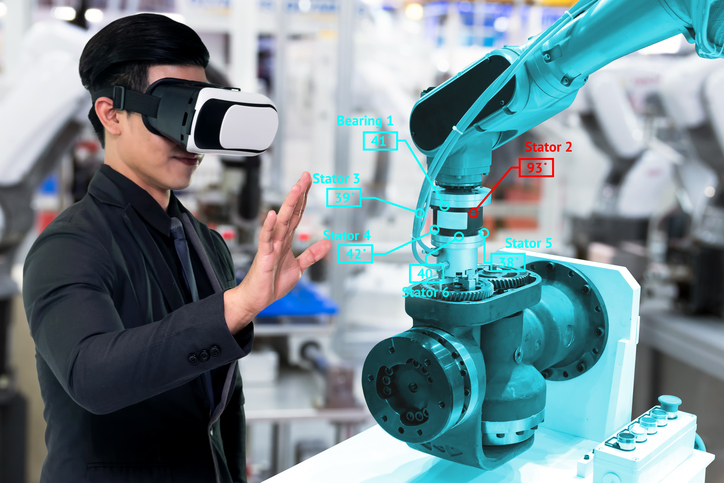

SISTEMAS CIBERNETICOS Y TENDENCIAS INFORMATICAS

1SISTEMA CIBERNETICO
Un sistema cibernético puede ser una entidad natural que emerge
espontáneamente como resultado de un proceso evolutivo,
como es el caso de los organismos y las sociedades, o puede ser una
entidad artificial diseñada y planificada, como una máquina construida
o una organización con un proyecto de trabajo.
2TENDENCIA INFORMATICA
Las tendencias tecnológicas significan mantenerse a la vanguardia respecto
a lo último que sucede en el mundo de la tecnología, tener conocimiento
sobre los trabajos y certificaciones más recientes, mejor pagados y mantener
la vista en el futuro
PREGUNTAS SOBRE ESTOS TEMAS:
SISTEMA CIBERNETICO
QUE ES?
CARACTERISTICAS
FUNCIONES
TENDENCIA INFORMATICA
QUE ES?

FUTURAS TENDENCIAS INFORMATICA